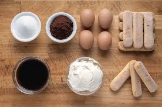

Ingredientes
- ¾ taza o 160gr de azúcar
- 400 cc de crema de leche o nata
- 600 gr de mascarpone (aquí les dejo mi receta de mascarpone casero)
- 7 yemas
- 1 medida de cognac o amaretto (opcional)
- 1 taza de café
- 2 paquetes de vainillas o bizcocho de soletilla
- Cacao amargo y chocolate semi amargo para la terminación.

Paso a paso
- Batir las yemas a baño María e incorporar el azúcar y el cognac o amaretto. Batimos por 5 minutos aproximadamente. Retirar del fuego y batir hasta que las yemas estén a temperatura ambiente. Van a notar que las yemas triplican su tamaño y hacerse una especie de crema. Hermoso. Vamos bien.
- batir un poco el mascarpone para que no tenga grumos. El paso mas fácil de la historia pero es muy importante en esta receta de Tiramisú.
- Verter las yemas sobre el mascarpone e integrar con movimientos envolventes. Sumar la crema de leche semi batida y mezclar suavemente.
- Hidratar los bizcochos de tiramisú en el café.
- Disponer la primer capa vainillas en la fuente. También se pueden hacer vasitos, lo que más te haga feliz Mabel. No importa en qué lo prepares, tiene que quedar una capa de vainillas, una de crema, una de vainillas y por último una de crema. Espolvoreamos por arriba el cacao amargo y el chocolate semi amargo rallado o picado y a la heladera! El tiramisú frío es mucho más rico!